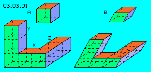
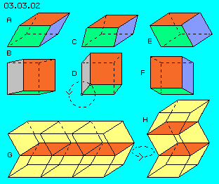
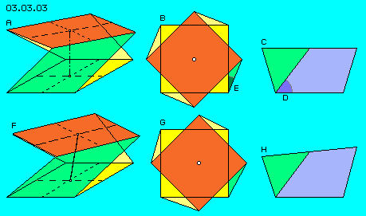
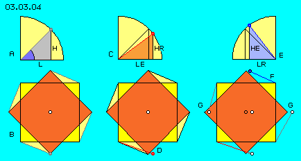
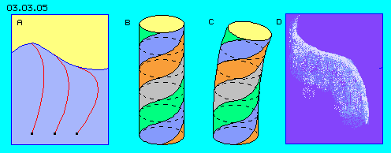

| Alfred Evert | 2003-04-04 |
03.03. Volumes and Shapes
Analogue to Sea Waves
Analogue to these impressions, now the basics of local movements of the aether are considered. Opposite to water, the aether is a part-less real continuum, so no parts can shift alongside each other, no border-surfaces nor flow-threads exist.
Fictive Grid 
At picture 03.03.01 at A a cube is drawn and one could imagine, whole universe is divided (fictive) into such unit cubes. Aether-cubes like this, thus would be arranged narrow together with same height (Y) and width (X) and depth (Z). However, this kind of divisions makes no sense, because each shifting of grid-lines (resp. grid-surfaces) would reduce the volume of the units.
At this picture at B, an alternative division is drawn by ´sloped cube´. This unit e.g. shows square surfaces downside and upside, right-angled surfaces at left and right side, however parallelogram surfaces at front side (green) and backside. The volume of this unit is the basic surface multiplied by the vertical height.
Circle Movement
If the upper surface rests at same level above the bottom surface, the volume of that unit is constant. So the upper surface could be turned around at same level, without changing the volume. By this movement, all aetherpoints would turn parallel at circled tracks.

Parallel to this line, also three other lines (showing upward) would swivel around their edges. Each point of the bottom surface could be connected with a corresponding point of the upper surface (thus representing neighbouring aetherpoints). All these lines would swivel same kind parallel to each other, thus all aetherpoints from bottom to top would turn at each larger circles.
At G are drawn three of these sloped bodies one besides next and mirrored upside three likely bodies. The grid surface in the middle (red) is the mutual connecting surface. The bottom surface of downside bodies and the upper surface of upside bodies are resting, however the middle surfaces can swivel around (by constant volumes).
At H are mounted three of these sloped bodies one above the other. Even the surfaces most downside and most upside are stationary, the layers between could move by circles.
So it would be possible, through the whole universe one or several layers could move at circled tracks. However, this would be a universal movement (however no real one), so this possibility is not relevant for locally limited movement pattern.
Twisted Cubes
At A this body is drawn by diagonal view. The bottom surface is marked yellow. Above that surface, the upper surface (red) of the cube is twisted by 45 degree. The side surfaces thus also are twisted planes, only the front surface is marked green.

At C is shown the view from right side onto this body. One can see only the right surface (blue) and a part of the front surface (green). All side surfaces are shaped like twisted parallelograms.
This body is arranged that kind, the side-lines show 45 degree to the bottom lines. This angle is marked by D. By the view top down this line shows 22.5 degree to the edge-line of the bottom surface. This angle is marked by E.
Deformed Cubes
At G is shown, this tilting aside of the upper surface (frontside-down, backside-up) is only possible, if the upper surface is shifted to right side same time (the upper surface no longer rests central above the bottom surface, so the graph G is not symmetric).
At F this new shape of the body is drawn by diagonal view, where the frontside edge has moved some down and back edge has move some up. Same time, the axis between bottom- and upper-surface now is tilt to right side. The following picture shows the reasons for that coupling of both right-angled movements.
Tangens 45 Degrees

Opposite, now at E is lifted the opposite edge (by same angle), so the height (HE) is enlarged and the distance (LR) between the edge-points is reduced. By view top down, the new position of this edge of the upper surface is marked by F.
So by this tilting of the upper surface, not only both edge-points did change their height, but both are shifted to right side (by same size). So also both other edge-points (by view top down left and right) now are shifted to new positions G (while their height is unchanged, thus these edges did only swivel like previous sloped bodies).
Tilting of the upper surface inevitably results a shifting aside. Naturally also a shifting of the upper surface vice versa would force a tilting of the upper surface same time (opposite to previous sloped bodies with all times parallel turnings).
The indispensable mutual interdependence of both movements thus produces the result shown at previous picture 03.03.03: Tilting into sideward direction (H) resp. towards frontside (F) results same time a shifting of the upper surface to right side (G) resp. same time a tilting of the central axis.
Only within Aether-Continuum
Only if the aether is assumed to be real (part-less) continuum, all neighbouring aetherpoints must be neighbours all time and movements are possible only in shape of turnings (like previous moving down / up of two edges and simultaneous overlay by swivel of both other edges). Only that part- and gap-less medium demands inevitably these both movements right-angled to each other.
Indispensable coupled Movements

Analogue to these processes, local movements also within the aether will work, however only by overlay of turnings (resp. bendings) right-angled to each other. Because the aether has no edges, here at B is drawn a round cylinder and 45-degree are marked by twisted bands around the cylinder. At C is shown, this aether-cylinder is to bend and twist only into two directions same time. Analogue to movements of previous example, also here the (fictive) cross-sectional faces are tilt and shifted gradually, while the central longitudinal axis is bended continuously by a spiral curve.
If a material rod (or pipe or tube) is bended into only one direction, tension within the material comes up. Only if the bending is combined with a twisting motion, a tensionless curve is to achieve (e.g. like a willow rod is handled for building baskets or a garden hose is easy rolled up). As the aether is neither compressible nor expansible (thus can´t equalise previous tensions), every aether movement must occur by two turnings right-angled to each other simultaneously.
This picture of a bended rod (C) thus is not quite correct as the aether really has no border surfaces. Analogue movements occur also outside of this fictive borders. Movements of each outer neighbouring area however must not do the process totally same kind, but gradually ´faded´ resp. locally introverted (like described at following chapter).
Real Appearances
It´s well known, the magnetic field exists exactly right-angled to the electric field and the induction occurs right-angled and forces work right-angled. This strange behaviour is the special property of all electromagnetic appearances, on which practically all other physical occurrences are based. This right-angled effect is contradicting to all experiences of pure mechanical forces and up to now there was no explanation for these phenomena. That´s why one normally works only by abstract term of fields, sufficient for technical aspects.
It´s no question: all appearances of electromagnetism are real movements of real aether (not of abstract fields) and that aether only can be a real continuum. Only based on this assumption, the general laws of right-angled ´mutual affects´ are explainable - as they are simple mechanical processes within the aether-continuum and its strict limitation of possibilities.
The only problem is, not to think by parts and right-angled grids, but to see occurrences as expression of a strict structure of movements within the ´amorphous´ aether (i.e. that part- and border-less medium). Next chapter now will describe this basic structure by further details.
At previous chapter was shown, how sea waves give the impression of movements ahead by kilometres, while the real movements are limited to a rather narrow area. The water moves only at circles, however by overlays. The movement of local swinging is marked e.g. by connecting lines (resp. seaweed-trees) from resting water at bottom up to the surface with its heavy motion.
At picture 03.03.02 previous sloped body is shown once more, at upper row by diagonal view, at middle row by view top down. At A (by diagonal view) one can see the upper surface (red), the front surface (green) and right surface (blue). The upper surface is shifted to left side and some backwards versus the bottom surface (dotted lines), so at B (by view top down) one can see the upper surface (red), the front surface (green) and left surface (grey).
Previous right-angled grid is no aether-like division, the previous sloped body already allows some aether-like movement, however much better fits a ´twisted´ cube to universal aether movements. This shape of geometric bodies are shown at picture 03.03.03.
Now this body should be deformed, however without changing the volume. At H is shown the new view from right side. The frontside edge (left) there is dropped a little bit, the backward edge (right) is lifted correspondingly. Both other edges rest at their original level, so the average height of the body is constant and thus also the volume is unchanged.
t picture 03.03.04 at B, once more is shown the starting situation (like at B of previous picture) with the upper surface (red) symmetric above the bottom surface (yellow). Upside at A is drawn the frontside line between upper- and bottom-surface (corresponding to B downside). This line shows 45 degree to the bottom, so the height H (between upper- and bottom-surface) is like the horizontal distance (L) between the edge points (upside and downside).
The difference between a medium with parts and without parts must be pointed out once more. Within a medium of particles (e.g. gas or water or like the aether normally is assumed) the surfaces of previous right-angled cubes could be shifted without any problem. If one edge of a surface moves down, the particles located there could easy move into direction of opposite edge lifted upward (by internal shifting versus each other). If the average height of that body is constant, thus any shape could be achieved by same volume.
At picture 03.03.05 at A, once more is shown the starting basis of sea waves with connecting lines of neighbouring water parts. This drawing shows, the different distances between resting water (downside) and water part in motion (upper parts up to the surface of water) are equalised (or becomes possible) by more or less bending of the connecting line.
These curves bended within space are well known. This picture right side at D for example shows a polar-light with its impressive lines. Also the photos of nucleus-research show tracks like these (if interpreted within three dimensions) caused by ´annihilation of particles´. Most direct hint to the real existence of such movements however are the laws of electromagnetism, the most popular usage of aether movements by any electric apparatus.
03.04. Swinging Disc
Aether-Physics and -Philosophy